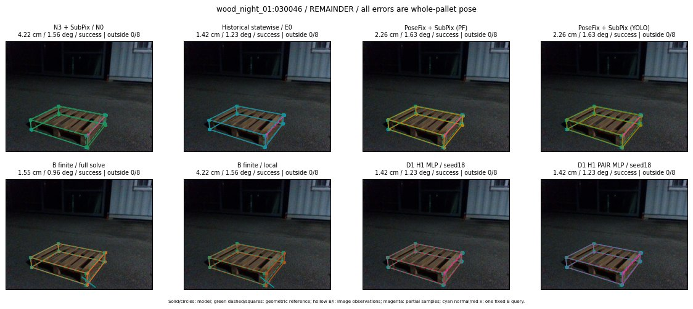

Whole-pallet pose errors; reference is a fixed geometric annotation, not certified physical GT.

Scores are uncalibrated logits. N0 retention is a numerical pose alias; it differs from H0 none or B fallback. B/I and profiles in baseline/B panels are original observations; L panels use new D1 observations. Only one deterministic supported B query is shown in a thumbnail; full support counts are below. Grey privacy rectangles edit the display copy only and are unrelated to O states; all observations were measured on original pixels. Thumbnails use JPEG quality85; detailed scientific panels are PNG.
| Method | Whole pose / cm, deg | Actual source | Selected ID | Score | Archived candidates | Eligible | N0 retained | H0 none | Fallback | Finite profiles |
|---|---|---|---|---|---|---|---|---|---|---|
| Raw YOLO + F | 4.61 cm / 2.06 deg / success | OTHER | None | N/A | N/A | N/A | False | N/A | None | N/A |
| N3 + SubPix / N0 | 4.22 cm / 1.56 deg / success | N0 | None | N/A | N/A | N/A | True | N/A | None | N/A |
| Historical statewise / E0 | 1.42 cm / 1.23 deg / success | E0_REGENERATED | None | N/A | N/A | N/A | False | N/A | False | N/A |
| PoseFix raw | 2.75 cm / 1.62 deg / success | OTHER | None | N/A | N/A | N/A | False | N/A | None | N/A |
| PoseFix + SubPix (PF) | 2.26 cm / 1.63 deg / success | OTHER | None | N/A | N/A | N/A | False | N/A | False | historical support records 9; finite audit N/A |
| PoseFix + SubPix (YOLO) | 2.26 cm / 1.63 deg / success | OTHER | None | N/A | N/A | N/A | False | N/A | False | historical support records 9; finite audit N/A |
| Historical L, seed18 | 4.22 cm / 1.56 deg / success | N0 | N0 | N/A | 64 | 60 | True | True | True | N/A |
| Historical B fixed bank | 1.42 cm / 1.23 deg / success | E0_REGENERATED | G13/ORIGINAL_WD/sample/0 | N/A | N/A | N/A | False | N/A | False | N/A |
| Historical B full | 3.43 cm / 2.61 deg / success | OTHER | NEW/B/ORIGINAL_WD/h0/G13/ORIGINAL_WD/sample/0/PROPOSED_NATIVE_YAW_0 | N/A | N/A | N/A | False | N/A | False | N/A |
| Historical edge full | 5.90 cm / 18.18 deg / failure | OTHER | NEW/edge/ORIGINAL_WD/h0/G13/ORIGINAL_WD/sample/0/PROPOSED_NATIVE_YAW_0 | N/A | N/A | N/A | False | N/A | False | N/A |
| Historical AB full | 6.74 cm / 3.08 deg / failure | OTHER | NEW/AB/ORIGINAL_WD/h0/G13/ORIGINAL_WD/sample/0/PROPOSED_NATIVE_YAW_0 | N/A | N/A | N/A | False | N/A | False | N/A |
| B finite / fixed bank | 1.55 cm / 0.96 deg / success | OTHER | G10/ORIGINAL_WD/sample/2 | N/A | N/A | N/A | False | N/A | False | 26/26 |
| B finite / full solve | 1.55 cm / 0.96 deg / success | OTHER | G10/ORIGINAL_WD/sample/2 | N/A | N/A | N/A | False | N/A | False | 26/26 |
| B finite / local | 4.22 cm / 1.56 deg / success | N0 | N0 | N/A | N/A | N/A | True | N/A | True | N/A |
| Edge finite / full solve | 16.13 cm / 88.43 deg / failure | OTHER | NEW_FINITE/edge/SWAPPED_WD/h0/G13/SWAPPED_WD/sample/0/PROPOSED_NATIVE_YAW_0 | N/A | N/A | N/A | False | N/A | False | 26/26 |
| D0 H0 MLP / seed18 | 4.22 cm / 1.56 deg / success | N0 | N0 | 3.592010021209717 | 36 | 32 | True | True | True | N/A |
| D0 H0 MLP / seed19 | 4.22 cm / 1.56 deg / success | N0 | N0 | 5.463628768920898 | 36 | 32 | True | True | True | N/A |
| D0 H0 MLP / seed20 | 4.22 cm / 1.56 deg / success | N0 | N0 | 1.7083905935287476 | 36 | 32 | True | True | True | N/A |
| D0 H1 MLP / seed18 | 1.42 cm / 1.23 deg / success | E0_REGENERATED | E0_REGENERATED | 0.5459348559379578 | 36 | 32 | False | False | False | N/A |
| D0 H1 MLP / seed19 | 1.42 cm / 1.23 deg / success | E0_REGENERATED | E0_REGENERATED | -0.2742416262626648 | 36 | 32 | False | False | False | N/A |
| D0 H1 MLP / seed20 | 1.42 cm / 1.23 deg / success | E0_REGENERATED | E0_REGENERATED | -0.6935257315635681 | 36 | 32 | False | False | False | N/A |
| D1 H0 MLP / seed18 | 4.22 cm / 1.56 deg / success | N0 | N0 | 7.897945880889893 | 36 | 32 | True | True | True | N/A |
| D1 H0 MLP / seed19 | 4.22 cm / 1.56 deg / success | N0 | N0 | 8.774638175964355 | 36 | 32 | True | True | True | N/A |
| D1 H0 MLP / seed20 | 4.22 cm / 1.56 deg / success | N0 | N0 | 7.746387958526611 | 36 | 32 | True | True | True | N/A |
| D1 H1 MLP / seed18 | 1.42 cm / 1.23 deg / success | E0_REGENERATED | E0_REGENERATED | 0.49491235613822937 | 36 | 32 | False | False | False | N/A |
| D1 H1 MLP / seed19 | 1.42 cm / 1.23 deg / success | E0_REGENERATED | E0_REGENERATED | 0.10132570564746857 | 36 | 32 | False | False | False | N/A |
| D1 H1 MLP / seed20 | 1.42 cm / 1.23 deg / success | E0_REGENERATED | E0_REGENERATED | 0.04739689826965332 | 36 | 32 | False | False | False | N/A |
| D1 H1 ROLE AFFINE / seed18 | 1.42 cm / 1.23 deg / success | E0_REGENERATED | E0_REGENERATED | -0.08640576899051666 | 36 | 32 | False | False | False | N/A |
| D1 H1 ROLE AFFINE / seed19 | 1.42 cm / 1.23 deg / success | E0_REGENERATED | E0_REGENERATED | -0.3672283887863159 | 36 | 32 | False | False | False | N/A |
| D1 H1 ROLE AFFINE / seed20 | 1.42 cm / 1.23 deg / success | E0_REGENERATED | E0_REGENERATED | 0.0029922164976596832 | 36 | 32 | False | False | False | N/A |
| D1 H1 PAIR MLP / seed18 | 1.42 cm / 1.23 deg / success | E0_REGENERATED | E0_REGENERATED | -1.222860336303711 | 36 | 2 | False | False | False | N/A |
| D1 H1 PAIR MLP / seed19 | 1.42 cm / 1.23 deg / success | E0_REGENERATED | E0_REGENERATED | -1.1335017681121826 | 36 | 2 | False | False | False | N/A |
| D1 H1 PAIR MLP / seed20 | 1.42 cm / 1.23 deg / success | E0_REGENERATED | E0_REGENERATED | -0.8216366767883301 | 36 | 2 | False | False | False | N/A |
| D1 H1 PAIR ROLE AFFINE / seed18 | 1.42 cm / 1.23 deg / success | E0_REGENERATED | E0_REGENERATED | -0.4983694851398468 | 36 | 2 | False | False | False | N/A |
| D1 H1 PAIR ROLE AFFINE / seed19 | 1.42 cm / 1.23 deg / success | E0_REGENERATED | E0_REGENERATED | -0.6520718336105347 | 36 | 2 | False | False | False | N/A |
| D1 H1 PAIR ROLE AFFINE / seed20 | 1.42 cm / 1.23 deg / success | E0_REGENERATED | E0_REGENERATED | -0.48630690574645996 | 36 | 2 | False | False | False | N/A |
| Regenerated common E0 | 1.42 cm / 1.23 deg / success | E0_REGENERATED | E0_REGENERATED | N/A | N/A | N/A | False | N/A | False | N/A |